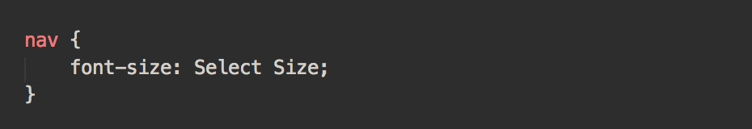
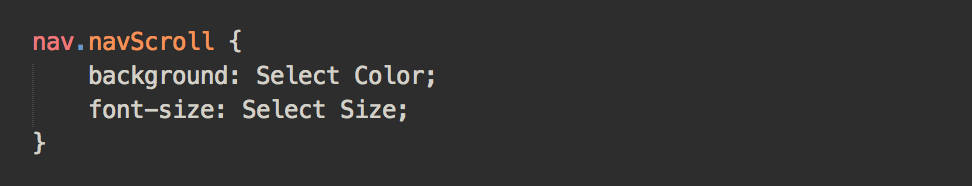
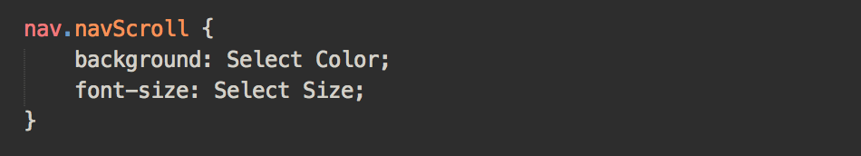
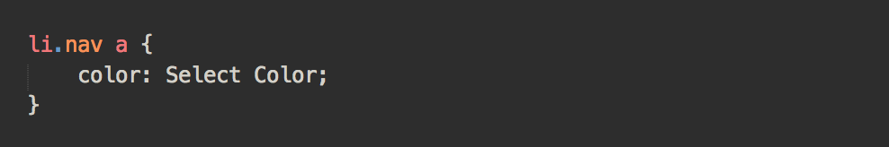
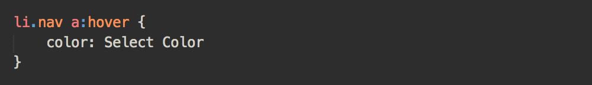

4. CSS
The CSS document includes the styling for your nav menu and everythign you need for prettySticky.js to function, below are the default options you may choose to override in your own stylesheet.
To change the font-size of the list items at the top of the page:
To change the background color of the nav menu and the font-size of the list items on scroll:
To change the size of the logo in the nav menu:
To change the color of the anchor links in the nav menu:
To change the color of the anchor links on hover:
To change the color of the highlighted anchor links when scrolling: